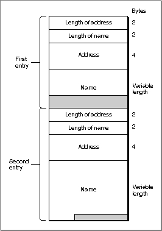

Using Mappers
This section begins by describing how the general provider functions that govern a provider's mode of operation apply to mapper providers. It goes on to discuss information you need to know in order to use mapper functions: how you format names and addresses specified in parameters to mapper functions and how you handle processing when calling mapper functions asynchronously. This section concludes with a discussion of different techniques you can use when using the mapper to search for a name pattern.Setting Modes of Operation for Mappers
Like all Open Transport providers, mappers can use different modes of operation. A mapper can execute synchronously or asynchronously. You set the mapper's default mode of execution by using the appropriate function to open it; for example, you can open a mapper that executes asynchronously by calling theOTAsyncOpenMapperfunction to create the mapper. After opening the mapper, you can change its mode of execution by calling theOTSetSynchronousorOTSetAsynchronousfunctions. To determine how mapper functions execute, you call theOTIsSynchronousfunction. A mapper uses one asynchronous event and four completion events. Table 4-1 lists the event codes that the mapper provider can pass to your application and explains the meaning of thecookieparameter to the notifier for each function. For more detailed information, see the descriptions of the mapper functions beginning on page 4-19.The only way to cancel an asynchronous mapper function is to call the
OTCloseProviderfunction, passing the mapper reference for which the function was executed. TheOTCloseProviderfunction is described in the chapter "Providers" in this book.By default, mappers do not block and do not acknowledge sends. You can change a mapper's blocking status by using the
OTSetBlockingfunction. You can change a mapper's send-acknowledgment status by using theOTAckSendsfunction. These functions are described in the chapter "Providers" in this book. Mapper providers are not affected by their send-acknowledgment status. However, a mapper provider's blocking status might affect the behavior of mapper functions. For example, if a mapper is blocking, heavy network traffic might cause mapper functions to wait before sending or receiving data. If a mapper is nonblocking and you are doing a lot of name lookups, theOTLookupNamefunction might return with thekOTFlowErrresult. In this case, you can try executing the function later.Specifying Name and Address Information
Several mapper functions require that you specify a name or address. This might be a name to register or to look up. Specifying a name or address means that you have to create a buffer that contains the information and then create aTNetbufstructure that specifies the size and location of this buffer. The format that you use to store a name or an address is specific to the name-registration protocol that underlies the mapper and is exactly the same as the name and address formats that you can use to bind an endpoint. For information about name and address formats, please consult the documentation provided for the protocol you are using.If the protocol supports it, you can specify a name pattern rather than a name when calling the
OTLookupNamefunction. Different protocols might use different wildcard characters to define name patterns. Please consult the documentation provided for your protocol to determine valid wildcard characters and how you use these to specify name patterns.Searching for Names
You use theOTLookupNamefunction to search for a registered name or for a list of names if your protocol supports name pattern matching. You use thereqparameter to the function to specify the name or name pattern to search for. When the function returns, it uses thereplyparameter to pass back the matching name or names.The
reqparameter is a pointer to aTLookupRequeststructure containing the name or name pattern to be found and additional information that the mapper can use in conducting the search. You use themaxcntfield to specify the number of names you expect to be returned. If you are looking for a specific name, set this field to 1. If you are looking for a name pattern, you can use this field to indicate the number of matches you expect theOTLookupNamefunction to return. You use thetimeoutfield to specify the amount of time (in milliseconds) available for this search. If a match is not found within the specified time, the function returns with thekOTNoDataErr. If you do not specify a value for themaxcntfield, or if the number you specify is larger than the number of names that match the given pattern, the mapper provider uses the value given in thetimeoutfield to determine when to stop the search.The
replyparameter is a pointer to aTLookupReplystructure that contains two fields. Thenamesfield describes the size and location of the buffer in which the replies are placed when the function returns; therspcountfield specifies the number of matching entries found. Figure 4-1 shows how the contents of a reply buffer containing two entries are stored.Figure 4-1 Format of entries in
OTLookupNamereply buffer
The first 2 bytes of each entry specifies the length of the address; the second 2 bytes specifies the length of the name. The address is stored next and then the name, padded to a quad-word boundary. Given a pointer to the reply buffer (
replyBufPtr), you can obtain the length of the address (alen) and the length of the name (nlen), and then you can compute the length of an entry in the reply buffer as follows:bufPtr = (short*)replyBufPtr alen = ((UInt16*)bufPtr)[0]; nlen = ((UInt16*)bufPtr)[1]; len = alen + nlen + 4 /* length of first entry */Because the entry is aligned on a quad-word boundary, you must account for this padding to determine where the next entry begins. For example, the following formula computes the beginning of the next entry:bufPtr = bufPtr + (len + 3L) & ~3L);The next section "Retrieving Multiple Entries From the Reply Buffer," presents a small code sample that shows how to parse the reply buffer.Retrieving Multiple Entries From the Reply Buffer
Listing 4-1 shows the sample routineDoParseOTLookup, which retrieves name-address entries from the reply buffer filled in by theOTLookupNamefunction. The buffer being parsed in the sample listing contains name-address entries for AppleTalk endpoints.Listing 4-1 Parsing the reply buffer for
OTLookupNamevoid DoParseOTLookup(Ptr returnBufferPtr, long numFound) { char nameString[100]; DDPAddress ddpAddress; char* bp; long index; index = 0; bp = (char*) returnBufferPtr; while(index < numFound) { UInt16 len; /* entry length */ UInt16 alen; /* adress length */ UInt16 nlen; /* name length */ alen = ((UInt16*) bp)[0]; nlen = ((UInt16*) bp)[1]; len = alen + nlen + 4; BlockMove((Ptr)(bp + 4), (Ptr)&ddpAddress, sizeof(DDPAddress)); BlockMove((Ptr)(bp + alen + 4), (Ptr)nameString, nlen); nameString[nlen] = '\0'; /* Print, display, or store the address and name in ddpAddress and nameString. */ /* point to next tuple */ bp = bp + ((len + 3L) & ~3L); index++; } }TheDoParseOTLookupfunction takes two parameters, a pointer to the buffer containing the data returned by theOTLookupNamefunction and a value specifying the number of entries in the buffer. Both these values are returned
in thereplyparameter to theOTLookupNamefunction. TheDoParseOTLookupfunction uses awhileloop to move through the buffer entry by entry. For
each entry,At this point in the program, you can print or display or store the values of the
- it determines the length of the address by looking at the first 2 bytes of the entry and determines the length of the name by looking at the next 2 bytes of the entry
- it sets
lento the length of the entire entry by adding 4 bytes (the room taken up byaddrLenandnameLen) to the length of the address and the length of the name- it moves the DDP address, which it finds 4 bytes into the entry, into the
ddpAddressvariable; and it moves the NBP name, which starts at (bp+alen+4) into thenameStringvariable.Because the NBP name is neither a Pascal nor a C string (it does not begin with a length byte and it does not end with a null character), the function then adds a null character to the name stored in the
nameStringvariable to make it a C string. This makes it easier for the program to manipulate
the string.ddpAddressandnameStringvariables. The statement
bp = bp + ((len + 3L) & ~3L);is used to point to the next entry.
If you execute the
OTLookupNamefunction asynchronously, you can also use method described in the next section, "Retrieving Entries in Asynchronous Mode," to retrieve address-name information.Retrieving Entries in Asynchronous Mode
If you call theOTLookupNamefunction asynchronously, you can use an alternate method for retrieving matching entries. In asynchronous mode, this function returns two event codes: it returns theT_LKUPNAMERESULTcode each time it stores a name in the reply buffer, and it returns theT_LKUPNAMECOMPLETEcode when it has stored the last name in the reply buffer--that is, when the function as a whole completes execution. You can ignore theT_LKUPNAMERESULTevent, allocate a large reply buffer, and use the method described in the previous section, "Retrieving Multiple Entries From the Reply Buffer," to parse through the buffer. Alternately, each time theT_LKUPNAMERESULTevent is passed to your notification function, you can do the following:This method saves you the trouble of guessing how large a reply buffer to allocate. It might also save you some memory if you are expecting many matches to be returned and are interested in only some of them.
- Copy the name and address information from the reply buffer to some other location.
- From inside the notifier function, set the
reply->names.lenfield or thereply->rspcountfield to 0.When you set either of these fields to 0, Open Transport automatically sets the other field to 0. It's important, however, that you reset these values from within the notifier or the results might be unpredictable.
- Repeat the first two steps until the event passed to your notifier function is
T_LKUPNAMECOMPLETE.